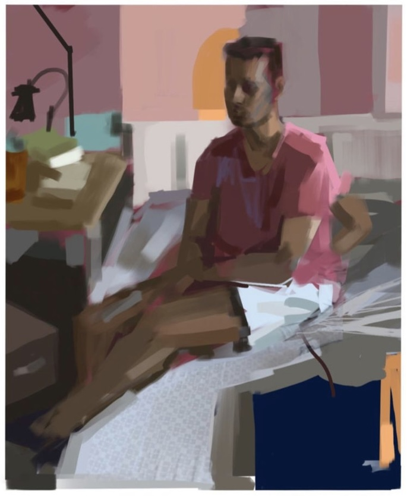
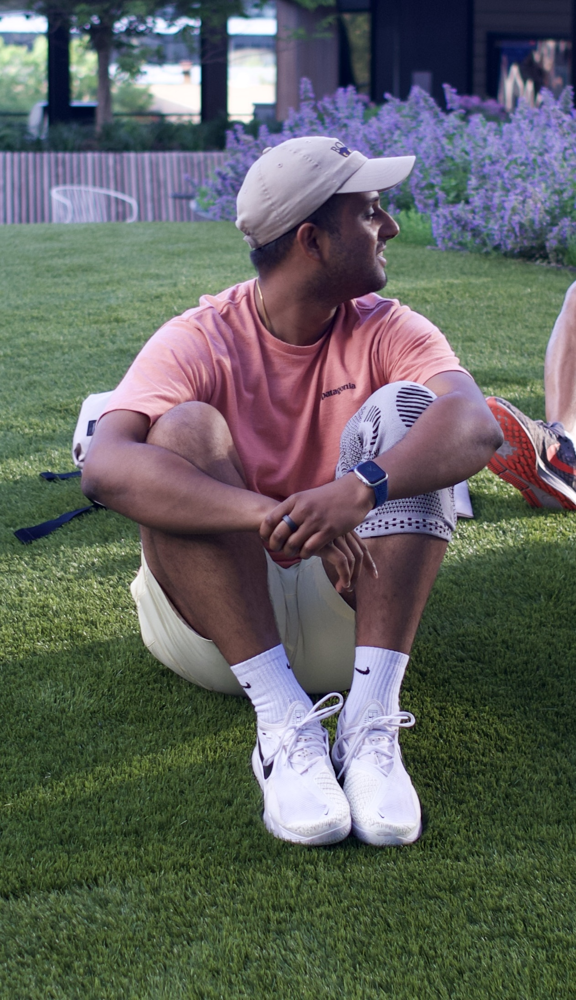
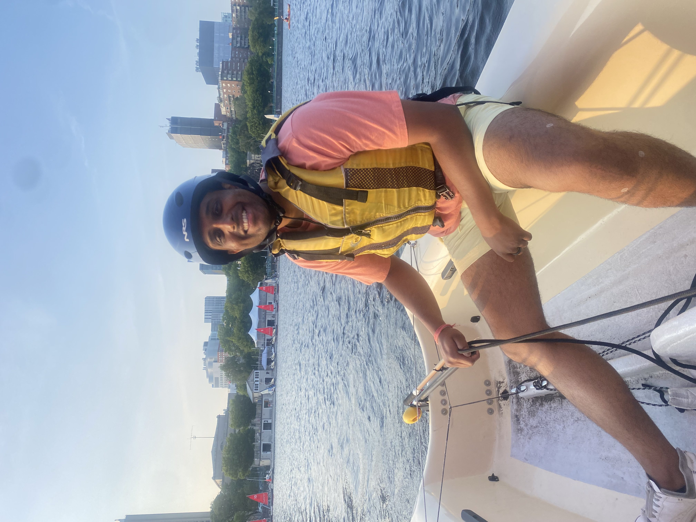
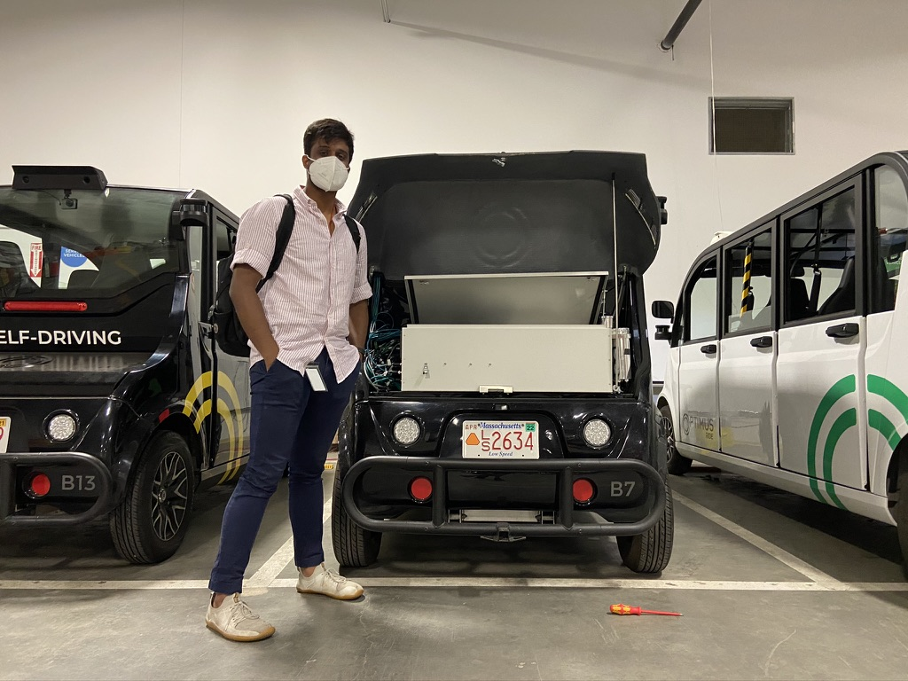

Personal




As a kid, I moved around a lot- from Jamshedpur & Dehradun (India), Sana'a (Yemen), Madrid (Spain), Oklahoma City, and Houston all before the age of 18. I picked up bits of language, culture, and music as I grew up in different multicultural environments around the world. So I'm currently fluent in Spanish and Hindi but have lost touch with my French & Arabic. I love spending time with my family & friends and philosophizing about life and our ultimate purpose (mostly through an Indian philosophy lens). Prior to COVID, I used to play 5.0 USTA Tennis leagues around the Boston area in addition to golf and soccer (although soccer has been minimal since my ACL injury). Always looking to play more tennis so hit me up!
I'm also passionate about public engagement and science advocacy. Recently, I wanted to show how AI can be more than just a tool for automation but also used to understand human and animal perception.
To learn more about how to apply to PhD programs, please look at the Media Lab's SOS Program and the EECS Graduate Application Assistance Program (GAAP).
*P.S: I need to work on shortening my swings.